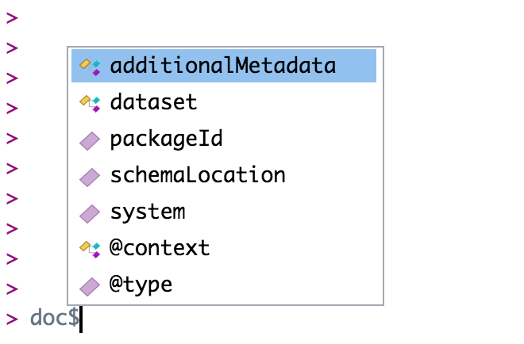
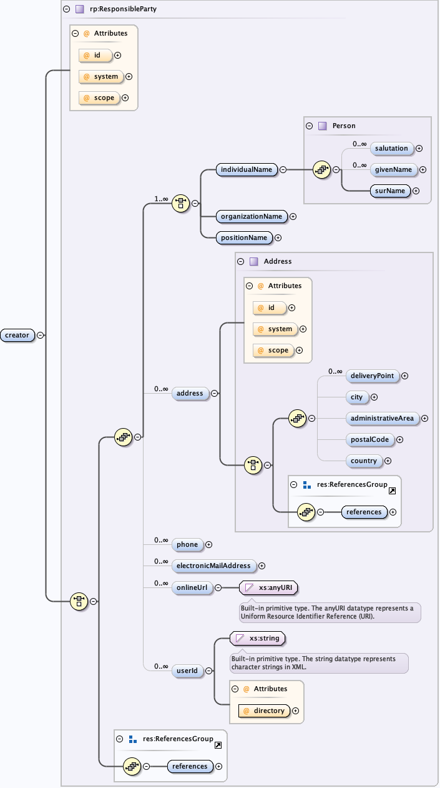

Chapter 3 Exploring EML
We use the Ecological Metadata Language (EML) to store structured metadata for all datasets submitted to the Arctic Data Center. EML is written in XML (extensible markup language) and functions for building and editing EML are in the EML R package.
Currently the Arctic Data Center website supports editing EML version 2.2.0. There are still some metadata in 2.1.1 that will be converted eventually.
For additional background on EML and principles for metadata creation, check out this paper.
If you aren’t too familiar with lists and how to navigate them yet take a look at the relevant sections in the Stat 545 class.
3.1 Navigate through EML
The first task when editing an EML file is navigating the EML file. An EML file is organized in a structure that contains many lists nested within other lists. The function View allows you to get a crude view of an EML file in the viewer. It can be useful for exploring the file.
# Need to be in this member node to explore file
d1c_test <- dataone::D1Client("STAGING", "urn:node:mnTestARCTIC")
doc <- read_eml(getObject(d1c_test@mn, "urn:uuid:558eabf1-1e91-4881-8ba3-ef8684d8f6a1"))View(doc)
The complex EML document is represented in R as as series of named, nested lists. We use lists all the time in R! A data.frame is one example of a special kind of list that we use all the time. You may be familiar with the syntax dataframe$column_name which allows us to select a particular column of a data.frame. Under the hood, a data.frame is a named list of vectors with the same length. You select one of those vectors using the $ operator, which is called the “list selector operator.”
Just like you navigate in a data.frame, you can use the $ operator to navigate through the EML structure. The $ operator allows you to go deeper into the EML structure and to see what elements are nested within other elements. However, you have to tell R where you want to go in the structure when you use the $ symbol. For example, if you want to view the dataset element of your EML you would use the command doc$dataset. If you want to view the creators of your data set you would use doc$dataset$creator. Note here that creator is contained within dataset. If you aren’t sure where you want to go, hit the tab button on your keyboard after typing $ and a list of available elements in the structure will appear (e.g., doc$<TAB>):

Note that if you hit tab, and nothing pops up, this most likely implies that you are trying to go into an EML element that can take a series items. For example doc$dataset$creator$<TAB> will not show a pop-up menu. This is because creator is a series-type object (i.e. you can have multiple creators). If you want to go deeper into creator, you first must tell R which creator you are interested in. Do this by writing [[i]] first where i is the index of the creator you are concerned with. For example, if you want to look at the first creator i = 1. Now doc$dataset$creator[[1]]$<TAB> will give you many more options. Note, an empty autocomplete result sometimes means you have reached the end of a branch in the EML structure.
At this point stop and take a deep breath. The key takeaway is that EML is a hierarchical tree structure. The best way to get familiar with it is to explore the structure. Try entering doc$dataset into your console, and print it. Now make the search more specific, for instance: doc$dataset$abstract.
3.2 Understand the EML schema
Another great resource for navigating the EML structure is looking at the schema which defines the structure. The schema diagrams on this page are interactive. Further explanations of the symbology can be found here. The schema is complicated and may take some time to get familiar with before you will be able to fully understand it.
For example, let’s take a look at eml-party. To start off, notice that some elements have bolded lines leading to them.

A bold line indicates that the element is required if the element above it (to the left in the schema) is used, otherwise the element is optional.
Notice also that next to the givenName element it says “0..infinity”. This means that the element is unbounded — a single party can have many given names and there is no limit on how many you can add. However, this text does not appear for the surName element — a party can have only one surname.
You will also see icons linking the EML slots together, which indicate the ordering of subsequent slots. These can indicate either a “sequence” or a “choice”. In our example from eml-party, a “choice” icon indicates that either an individualName, organizationName, or positionName is required, but you do not need all three. However, the “sequence” icon tells us that if you use an individualName, you must include the surName as a child element. If you include the optional child elements salutation and givenName, they must be written in the order presented in the schema.
The eml schema sections you may find particularly helpful include eml-party, eml-attribute and eml-physical.
For a more detailed description of the EML schema, see the reference section on exploring EML.
3.3 Access specific elements
The eml_get() function is a powerful tool for exploring EML (more on that here ). It takes any chunk of EML and returns all instances of the element you specify. Note: you’ll have to specify the element of interest exactly, according to the spelling/capitalization conventions used in EML. Here are some examples:
doc <- read_eml(system.file("example-eml.xml", package = "arcticdatautils"))
eml_get(doc, "creator")individualName:
givenName: Bryce
surName: Mecum
organizationName: National Center for Ecological Analysis and Synthesiseml_get(doc, "boundingCoordinates")eastBoundingCoordinate: '-134'
northBoundingCoordinate: '59'
southBoundingCoordinate: '57'
westBoundingCoordinate: '-135'eml_get(doc, "url")'':
function: download
url: ecogrid://knb/urn:uuid:89bec5d0-26db-48ac-ae54-e1b4c999c456
'': ecogrid://knb/urn:uuid:89bec5d0-26db-48ac-ae54-e1b4c999c456eml_get_simple() is a simplified alternative to eml_get() that produces a list of the desired EML element.
eml_get_simple(doc$dataset$otherEntity, "entityName")To find an eml element you can use either a combination of which_in_emlfrom the arcticdatautils package or eml_get_simple and which to find the index in an EML list. Use which ever workflow you see
fit.
An example question you may have: Which creators have a surName “Mecum”?
Example using which_in_eml:
n <- which_in_eml(doc$dataset$creator, "surName", "Mecum")
# Answer: doc$dataset$creator[[n]]Example using eml_get_simple and which:
ent_names <- eml_get_simple(doc$dataset$creator, "surName")
i <- which(ent_names == "Mecum")
# Answer: doc$dataset$creator[[i]]